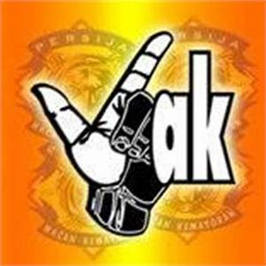

1.Bobotoh
Bobotoh adalah sebutan untuk pendukung klub sepak bola Persib Bandung. Nama ini berasal dari bahasa Sunda yang berarti orang-orang yang mendorong atau membangun semangat bagi orang lain. Dalam bobotoh ada beberapa kelompok pendukung seperti Viking dan Bomber dan jenis lainnya seperti Bobotoh Oriental, Hooliganisme, Ultras, Casuals. Tapi nama kesatuan mereka tetap Bobotoh sebagai nama suporter Persib Bandung

2.jak mania
The Jakmania adalah kelompok pendukung / supporter kesebelasan sepak bola Persija Jakarta yang berdiri sejak Ligina IV, tepatnya 19 Desember 1997. Markas dan sekretariat The Jakmania berada di Stadion Lebak Bulus. Setiap hari Selasa dan Jumat itu merupakan rutinitas The Jakmania baik itu pengurus maupun anggota untuk melakukan kegiatan berkumpul bersama membahas perkembangan The Jakmania serta laporan-laporan dari setiap bidang kepengurusan. Tidak lupa juga melakukan pendaftaran bagi anggota baru dalam rutinitas tersebut.[
